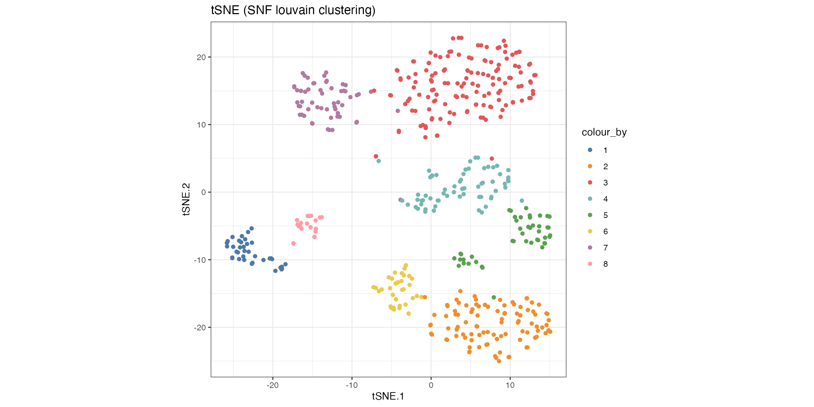
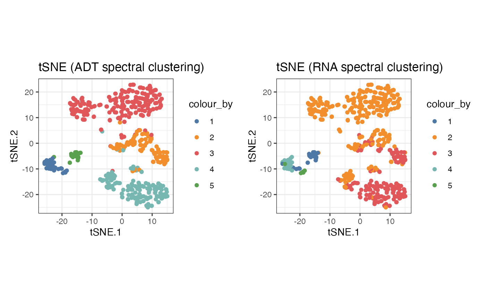
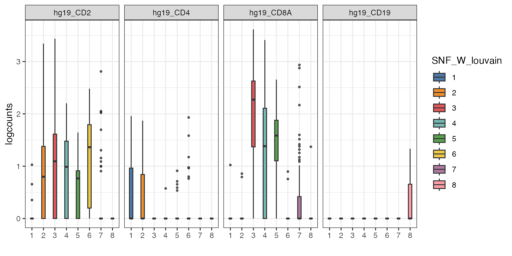
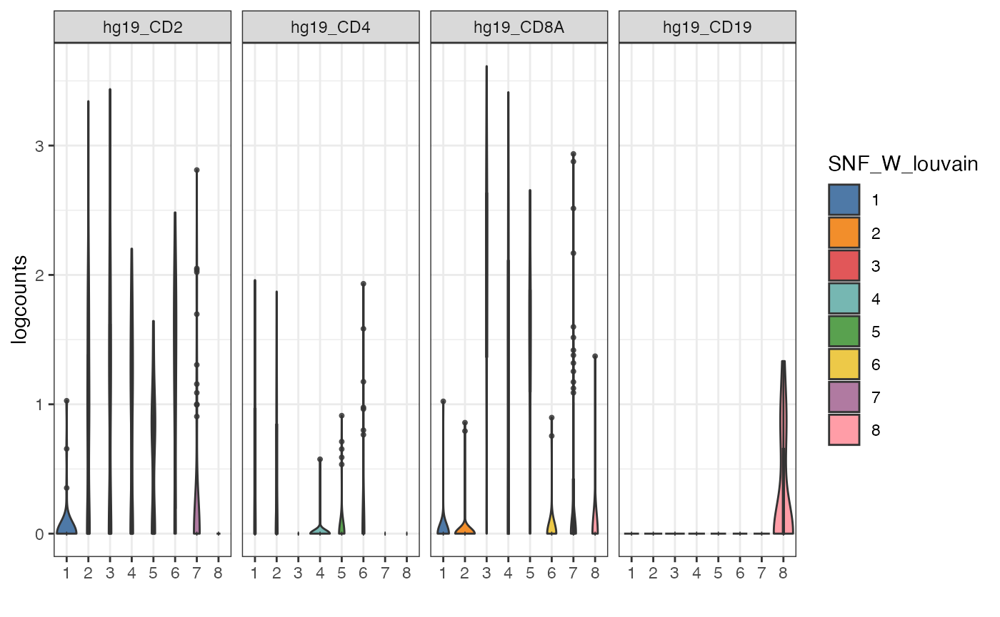
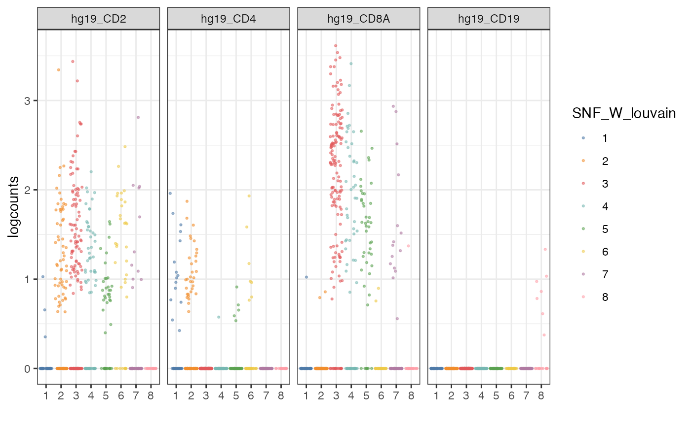
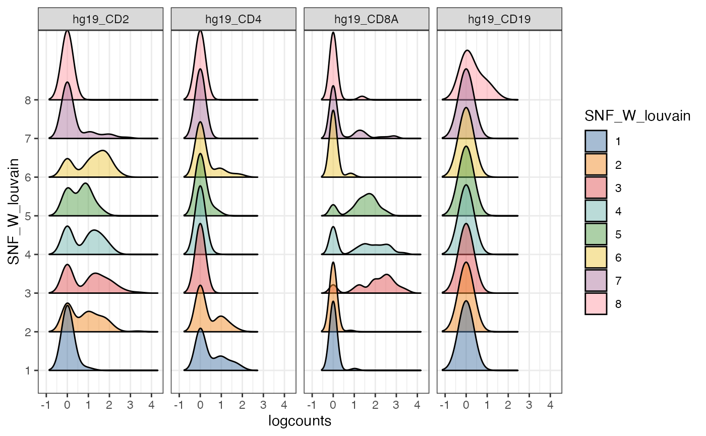
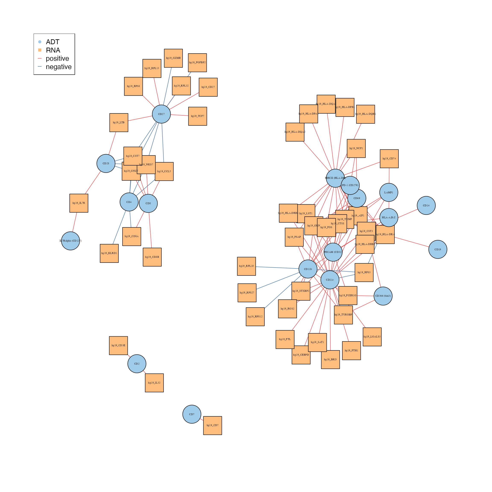
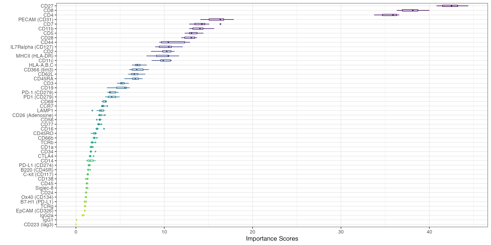

Analysis of CITE-seq data with CiteFuse
Carissa Chen1 Sharon Long2 Pengyi Yang3
Source:vignettes/citefuse.Rmd
citefuse.RmdOverview
Description
scRNA-seq has allowed us to dissect complex cell populations at the
transcriptomic level, however it lacks additional phenotypic information
such as the quantification of cell-surface proteins which is often
useful to distinguish closely related cell states (eg. in immunology).
CITE-seq uses oligonucleotide-labeled antibodies to integrate cellular
protein and transcriptomic measurements into a single-cell readout. In
this first section where we introduce single-cell multi-modal analysis,
we will learn how to pre-process and integratively explore CITE-seq data
using the CiteFuse package.
Introduction
The CITE-seq protocol involves conjugating antibodies to oligonucleotides, where each antibody is specific to a cell surface protein marker. The antibodies bind to their specific protein marker, and mRNA is lysed from the cell. Both molecular species are captured for scRNA-sequencing. In a process called ‘cell hashing’, cells are stained with sample-specific oligonucleotide-labelled antibodies (‘hashing antibodies’), thus allowing the samples to be multiplexed and sequenced in a single experiment and later traced back to their origin. Thus, allowing for high-throughput and high-dimensional multi-omic single-cell analysis.
CiteFuse is a computational framework that implements a
suite of methods and tools for CITE-seq data from pre-processing through
to integrative analytics. This includes doublet detection, network-based
modality integration, cell type clustering, differential RNA and protein
expression analysis, ADT evaluation, ligand-receptor interaction
analysis, and interactive web-based visualisation of the analyses.
In this workshop, we demonstrate the usage of CiteFuse
on a subset data of CITE-seq data from human PBMCs as an example Mimitou et al.,
2019.
Loading libraries and the data
library(CiteFuse)
library(scater)
library(SingleCellExperiment)
library(DT)
library(patchwork)
library(mclust)Here, we start from a list of three matrices of unique molecular identifier (UMI), antibody derived tags (ADT) and hashtag oligonucleotide (HTO) count, which have common cell names.
There are 500 cells in our subsetted dataset. And characteristically
of CITE-seq data, the matrices are matched, meaning that for any given
cell we know the expression level of their RNA transcripts (genome-wide)
and its corresponding cell surface protein expression. The
preprocessing function will utilise the three matrices and
its common cell names to create a SingleCellExperiment
object, which stores RNA data in an assay and
ADT and HTO data within in the
altExp slot.
lapply(CITEseq_example, dim)
#> $RNA
#> [1] 19521 500
#>
#> $ADT
#> [1] 49 500
#>
#> $HTO
#> [1] 4 500
sce_citeseq <- preprocessing(CITEseq_example)
sce_citeseq
#> class: SingleCellExperiment
#> dim: 19521 500
#> metadata(0):
#> assays(1): counts
#> rownames(19521): hg19_AL627309.1 hg19_AL669831.5 ... hg19_MT-ND6
#> hg19_MT-CYB
#> rowData names(0):
#> colnames(500): AAGCCGCGTTGTCTTT GATCGCGGTTATCGGT ... TTGGCAACACTAGTAC
#> GCTGCGAGTTGTGGCC
#> colData names(0):
#> reducedDimNames(0):
#> mainExpName: NULL
#> altExpNames(2): ADT HTOIntegration of RNA and ADT using SNF
The next step of analysis is to integrate the RNA and ADT matrix. We use a popular integration algorithm called similarity network fusion (SNF) to integrate the multi-omic data.
sce_citeseq <- scater::logNormCounts(sce_citeseq)
sce_citeseq <- normaliseExprs(sce_citeseq, altExp_name = "ADT", transform = "log")
sce_citeseq <- CiteFuse(sce_citeseq)
#> Calculating affinity matrix
#> Performing SNFWe now proceed with the fused matrix, which is stored as
SNF_W in the metadata slot of our sce_citeseq
object. We can calculate the t-SNE to generate an integrated embedding
using the SNF network.
sce_citeseq <- reducedDimSNF(sce_citeseq,
method = "tSNE",
dimNames = "tSNE_joint")How many clusters are in my data?
Clustering using Louvain clustering
As well as spectral clustering, CiteFuse can implement Louvain
clustering if users wish to use another clustering method. We use the
igraph package, and any community detection algorithms
available in their package can be selected by changing the
method parameter.
set.seed(2024)
SNF_W_louvain <- igraphClustering(sce_citeseq, method = "louvain")
table(SNF_W_louvain)
#> SNF_W_louvain
#> 1 2 3 4 5 6 7 8
#> 37 96 146 64 45 34 58 20
sce_citeseq$SNF_W_louvain <- as.factor(SNF_W_louvain)The outcome of the clustering can be easily visualised on a reduced dimensions plot by highlighting the points by cluster label.
visualiseDim(sce_citeseq, dimNames = "tSNE_joint", colour_by = "SNF_W_louvain") +
labs(title = "tSNE (SNF louvain clustering)")
Alternatively, the clustering can be easily visualised using a KNN graph labelled by cluster number.
set.seed(2024)
visualiseKNN(sce_citeseq, colour_by = "SNF_W_louvain")
[Optional] Clustering using Spectral clustering
CiteFuse implements two different clustering algorithms on the fused
matrix, spectral clustering and Louvain clustering. First, we perform
spectral clustering with sufficient numbers of K and use
the eigen values to determine the optimal number of clusters. What is
the optimal number of clusters here?
SNF_W_clust <- spectralClustering(metadata(sce_citeseq)[["SNF_W"]], K = 20)
#> Computing Spectral Clustering
plot(SNF_W_clust$eigen_values)Using the optimal cluster number defined from the previous step, we
can now use the spectralClustering function to cluster the
single cells by specifying the number of clusters in K. The
function takes a cell-to-cell similarity matrix as an input. We have
already created the fused similarity matrix from CiteFuse.
Since the CiteFuse function creates and stores the
similarity matries from ADT and RNA expression, as well the fused
matrix, we can use these two to compare the clustering outcomes by data
modality.
SNF_W_clust <- spectralClustering(metadata(sce_citeseq)[["SNF_W"]], K = 5)
#> Computing Spectral Clustering
sce_citeseq$SNF_W_clust <- as.factor(SNF_W_clust$labels)
SNF_W1_clust <- spectralClustering(metadata(sce_citeseq)[["ADT_W"]], K = 5)
#> Computing Spectral Clustering
sce_citeseq$ADT_clust <- as.factor(SNF_W1_clust$labels)
SNF_W2_clust <- spectralClustering(metadata(sce_citeseq)[["RNA_W"]], K = 5)
#> Computing Spectral Clustering
sce_citeseq$RNA_clust <- as.factor(SNF_W2_clust$labels)
g1 <- visualiseDim(sce_citeseq, dimNames = "tSNE_joint", colour_by = "SNF_W_clust") +
labs(title = "tSNE (SNF spectral clustering)")
g2 <- visualiseDim(sce_citeseq, dimNames = "tSNE_joint", colour_by = "ADT_clust") +
labs(title = "tSNE (ADT spectral clustering)")
g3 <- visualiseDim(sce_citeseq, dimNames = "tSNE_joint", colour_by = "RNA_clust") +
labs(title = "tSNE (RNA spectral clustering)")
g1
g2 + g3
Exploratory analysis of feature expression across modalities
CiteFuse has a wide range of visualisation tools to facilitate
exploratory analysis of CITE-seq data. The visualiseExprs
function is an easy-to-use function to generate boxplots, violin plots,
jitter plots, density plots, and pairwise scatter/density plots of genes
and proteins expressed in the data. The plots can be grouped by using
the cluster labels stored in the sce_citeseq object.
The expression of genes and proteins can be visualised by changing
the colour_by parameter to assess the clusters. As an
example, we highlight the plot by the RNA and ADT expression level of
CD8.
g1 <- visualiseDim(sce_citeseq, dimNames = "tSNE_joint",
colour_by = "hg19_CD8A",
data_from = "assay",
assay_name = "logcounts") +
labs(title = "tSNE: hg19_CD8A (RNA expression)")
g2 <- visualiseDim(sce_citeseq,dimNames = "tSNE_joint",
colour_by = "CD8",
data_from = "altExp",
altExp_assay_name = "logcounts") +
labs(title = "tSNE: CD8 (ADT expression)")
g1 + g2
Alternative visualisation 1: We can plot a boxplot of the expression of a subset of genes per cluster detected by the louvain clustering algorithm.
visualiseExprs(sce_citeseq,
plot = "boxplot",
altExp_name = "RNA",
group_by = "SNF_W_louvain",
feature_subset = c("hg19_CD2", "hg19_CD4", "hg19_CD8A", "hg19_CD19"))
Alternative visualisation 2: We can plot a violin plot of the expression of a subset of genes per cluster detected by the louvain clustering algorithm.
visualiseExprs(sce_citeseq,
plot = "violin",
altExp_name = "RNA",
group_by = "SNF_W_louvain",
feature_subset = c("hg19_CD2", "hg19_CD4", "hg19_CD8A", "hg19_CD19"))
Alternative visualisation 3: We can plot a jitter of the expression of a subset of genes per cluster detected by the louvain clustering algorithm.
visualiseExprs(sce_citeseq,
plot = "jitter",
altExp_name = "RNA",
group_by = "SNF_W_louvain",
feature_subset = c("hg19_CD2", "hg19_CD4", "hg19_CD8A", "hg19_CD19"))
Alternative visualisation 4: We can plot a density plot of the expression of a subset of genes per cluster detected by the louvain clustering algorithm.
visualiseExprs(sce_citeseq,
plot = "density",
altExp_name = "RNA",
group_by = "SNF_W_louvain",
feature_subset = c("hg19_CD2", "hg19_CD4", "hg19_CD8A", "hg19_CD19"))
Questions:
- From these collection of visualisations, do you notice any markers that are differentially expressed in any clusters?
- How would you plot the above, but for ADT?
Alternative visualisation 5: We can also create a pairwise scatter plot to visualise the distribution of cells that are expressing certain markers.
visualiseExprs(sce_citeseq, altExp_name = "ADT",
plot = "pairwise",
feature_subset = c("CD4", "CD8"))
#> number of iterations= 14
#> number of iterations= 22
Questions:
- What do each of the quadrants correspond to?
- Do we have many cells that co-express both markers?
What genes are differentially expressed between my clusters?
Perform DE Analysis with Wilcoxon Rank Sum test
CiteFuse can also calculates differentially expressed
(DE) genes through the DEgenes function. The cluster
grouping to use must be specified in the group parameter.
If altExp_name is not specified, RNA expression will be
used as the default expression matrix.
Results form the DE analysis is stored in sce_citeseq as
DE_res_RNA_filter and DE_res_ADT_filter for
RNA and ADT expression, respectively.
For RNA modality
# DE will be performed for RNA if altExp_name = "none"
sce_citeseq <- DEgenes(sce_citeseq,
altExp_name = "none",
group = sce_citeseq$SNF_W_louvain,
return_all = TRUE,
exprs_pct = 0.5)
sce_citeseq <- selectDEgenes(sce_citeseq,
altExp_name = "none")
datatable(format(do.call(rbind, metadata(sce_citeseq)[["DE_res_RNA_filter"]]),
digits = 2))For ADT modality
sce_citeseq <- DEgenes(sce_citeseq,
altExp_name = "ADT",
group = sce_citeseq$SNF_W_louvain,
return_all = TRUE,
exprs_pct = 0.5)
sce_citeseq <- selectDEgenes(sce_citeseq,
altExp_name = "ADT")
datatable(format(do.call(rbind, metadata(sce_citeseq)[["DE_res_ADT_filter"]]),
digits = 2))Visualising DE Results
After running DE analysis, we obtain the p-value and relevant
statistics to rank our differentially expressed genes in each cluster.
To visualise a selection of top DE genes, we can use
`DEcomparisonPlot. This lollipop plot shows the -log10
transformed adjusted p-values of the specified genes in RNA and ADT in
each cluster.
It requires a list of features from both RNA and ADT that we are interested in, as well as the output from the DE analysis.
rna_list <- c("hg19_CD4", "hg19_CD8A", "hg19_HLA-DRB1", "hg19_ITGAX", "hg19_NCAM1", "hg19_CD27", "hg19_CD19")
adt_list <- c("CD4", "CD8", "MHCII (HLA-DR)", "CD11c", "CD56", "CD27", "CD19")
rna_DEgenes_all <- metadata(sce_citeseq)[["DE_res_RNA"]]
adt_DEgenes_all <- metadata(sce_citeseq)[["DE_res_ADT"]]
feature_list <- list(RNA = rna_list, ADT = adt_list)
de_list <- list(RNA = rna_DEgenes_all, ADT = adt_DEgenes_all)
DEcomparisonPlot(de_list = de_list,
feature_list = feature_list)
Interpretation:
For each louvain-generated groups, we compare the -log10 transformed p-values of RNA genes (right) and ADT markers (left). The larger the value, the more significant the p-value. From this, we can see that in cluster 7, there is the significant differential expression of MHCII and CD19. This suggests that cluster 7 are B cells, possibly a B cell subtype.
How do I analyse the RNA and ADT modalities together?
Is there a relationship between important molecular factors in RNA and ADT?
We can generate a network diagram using the
geneADTnetwork function to examine the association between
the differentially expressed genes and protein markers. We specify the
unique DE genes across all clusters from the RNA and ADT modalities and
calculate the correlation between the genes using all cells. The nodes
denote proteins and RNA whilst the edges denote positive and negative
correlation in expression.
Questions:
- Do the results change if we use a different correlation method?
- What if we vary the
cor_thresholdparameter? - How do we examine the network for a specific cluster?
RNA_feature_subset <- unique(as.character(unlist(lapply(rna_DEgenes_all, "[[", "name"))))
ADT_feature_subset <- unique(as.character(unlist(lapply(adt_DEgenes_all, "[[", "name"))))
set.seed(2024)
netw <- geneADTnetwork(sce_citeseq,
RNA_exprs_value = "logcounts",
altExp_name = "ADT",
altExp_exprs_value = "logcounts",
cell_subset = NULL,
cor_threshold = 0.5,
RNA_feature_subset = RNA_feature_subset,
ADT_feature_subset = ADT_feature_subset,
cor_method = "pearson",
network_layout = igraph::layout_with_fr)
Interpretation:
There are roughly 4 groupings in the interaction network, particularly of interest, CD27 and CD11b is positively correlated with RPS and RPL ribosomal genes. This could be expected, as activated immune cells require increased ribosome biogenesis to support the immune response.
What are the ligand-receptor interactions in my data?
Ligand-receptor interactions are the means by which cells communicate with each other. Ligands (eg. hormones, neurotransmitters, growth factors etc.) bind to specific receptors on the surface of target cells, initiating intracellular signalling cascades that alter cell behaviour.
To take advantage of the ADT expression, CiteFuse implements a
ligandReceptorTest to find ligand-receptor interactions
between sender and receiver cells. Importantly, the ADT count is used to
predict receptor expression within receiver cells. Note that the setting
altExp_name = "RNA" would enable users to predict
ligand-receptor interaction from RNA expression only.
First, we load a database of known ligand-receptor interactions to query against our data.
# load the database of known ligand-receptor interactions from cellPhoneDB
data("lr_pair_subset", package = "CiteFuse")
head(lr_pair_subset)
#> [,1] [,2]
#> [1,] "hg19_IL17RA" "CD45"
#> [2,] "hg19_FAS" "CD11b"
#> [3,] "hg19_GZMK" "CD62L"
#> [4,] "hg19_CD40LG" "CD11b"
#> [5,] "hg19_FLT3LG" "CD62L"
#> [6,] "hg19_GZMA" "CD19"A key challenge in analyzing ligand–receptor interactions is the difference in scaling and distribution. Comparing unequal distributions can potentially introduce bias, especially during ligand–receptor predictions when means are compared. To address this, we first scaled each feature to a range of 0–1 through min–max normalization and then transformed the protein expression to force the low-expression values to zero.
sce_citeseq <- normaliseExprs(sce = sce_citeseq,
altExp_name = "ADT",
transform = "zi_minMax")
sce_citeseq <- normaliseExprs(sce = sce_citeseq,
altExp_name = "none",
exprs_value = "logcounts",
transform = "minMax")For each ligand–receptor interaction pair originating from a cluster expressing the ligand and another cluster expressing the receptor, a permutation test is performed on the mean of the average RNA expression from the ligand cluster and the mean of the protein expression from the receptor cluster. Only ligand–receptor pairs with a P-value of lower than 0.05 are defined as significant pairs.
sce_citeseq <- ligandReceptorTest(sce = sce_citeseq,
ligandReceptor_list = lr_pair_subset,
cluster = sce_citeseq$SNF_W_louvain,
RNA_exprs_value = "minMax",
use_alt_exp = TRUE,
altExp_name = "ADT",
altExp_exprs_value = "zi_minMax",
num_permute = 1000)
#> 100 ......200 ......300 ......400 ......500 ......600 ......700 ......800 ......900 ......1000 ......Alternative visualisation 1: To visualise the ligand-receptor predictions, we can plot a heatmap of p-values indicating significant ligand-receptor pairs between cluster groups.
visLigandReceptor(sce_citeseq,
type = "pval_heatmap",
receptor_type = "ADT")
Alternative visualisation 2: Here, we plot a network graph between cluster groups, where the weight of the lines indicate the number of LR-pairs.
set.seed(2024)
visLigandReceptor(sce_citeseq,
type = "group_network",
receptor_type = "ADT")
Evaluating the importance of ADT markers in clustering using random forest
An important evaluation in CITE-seq data analysis is to assess the
quality of each ADT and to evaluate the contribution of ADTs towards
clustering outcome. CiteFuse calculates the relative
importance of ADT towards clustering outcome by using a random forest
model. The higher the score of an ADT, the greater its importance
towards the final clustering outcome.
set.seed(2024)
sce_citeseq <- importanceADT(sce_citeseq,
group = sce_citeseq$SNF_W_louvain,
subsample = TRUE)The importance scores can be visualised in a boxplot. Our evaluation of ADT importance show that unsurprisingly CD4 and CD8 are the top two discriminating proteins in PBMCs.
visImportance(sce_citeseq, plot = "boxplot")
# view the top 20 markers by decreasing importance
sort(metadata(sce_citeseq)[["importanceADT"]], decreasing = TRUE)[1:20]
#> CD27 CD8 CD4 PECAM (CD31)
#> 42.429076 37.959710 35.452469 16.071124
#> CD7 CD11b CD5 CD28
#> 14.188008 13.978868 13.292323 12.895289
#> CD44 IL7Ralpha (CD127) CD2 MHCII (HLA-DR)
#> 10.896644 10.336379 10.194173 9.947160
#> CD11c HLA-A,B,C CD366 (tim3) CD62L
#> 9.913175 7.044662 7.014305 6.759411
#> CD45RA CD3 CD19 PD-1 (CD279)
#> 6.697095 5.245505 5.094099 4.112335